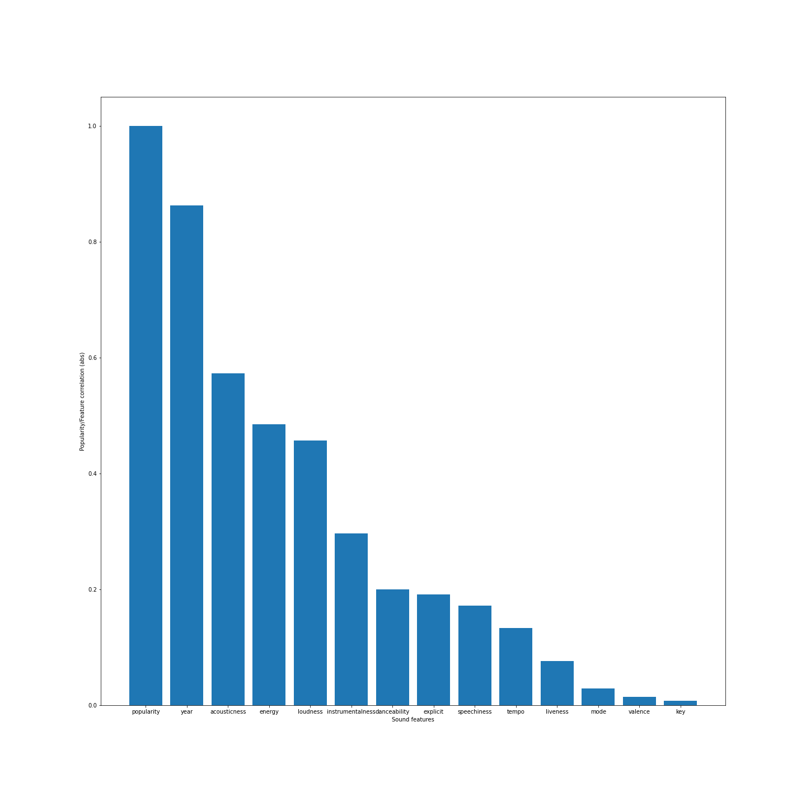

Para crear el modelo de predicción, partimos de un
dataset que contine unas 160k canciones
alojadas en Spotify cuyo año de publicación va desde 1921 hasta la actualidad.
Cada canción viene descrita en el dataset por las siguientes variables:
id, name, artists, year, valence, acousticness, danceability, duration_ms, energy,
explicit, instrumentalness, key, liveness, loudness, mode, popularity, release_date, speechiness y tempo.
Podemos observar que se trata de una serie de variables y métricas muy heterogénes y quizá no todas sean relevantes para nuestro modelo de regresión.
Por ello conviene relizar un estudio y limpieza previa del conjunto para conservar solo aquellas veriables útiles para el predictor.
Estudio y Limpieza
A grandes rasgos podemos diferenciar dos grandes tipos de columnas en el conjunto:
las variables no numéricas (describen atributos de la pista como su nombre, artista, identificador)
y las variables numéricas (describen diversas métricas del sonido, duración o incluso otros atributos como
el año de lanzamiento). Para nuestro modelo de regresión, utilizaremos las variables numéricas.
Es conveniente además conocer cuáles de estás métricas guardan un mayor grado de correlación con la variable a
predecir ya que así nuestro modelo de regresión ofrecerá resultados más precisos y fiables que si utilizamos variables
menos significativas.

Observamos que con mucha diferencia la variable que más correlacionada está con la popularidad de una pista es,
con diferencia year, seguida de otras que tambien lo están en manor medida como energy, acousticness o loudness.
El resto de variables guardan un grado de correlación con la popularidad bastante residual,
por lo que será conveniente descartarlos de cara a la construcción de nuestro modelo ya que quizá sean perjudiciales.
El modelo
Optamos finalmente por utilizar un modelo de regresión lineal múltiple para establecer una relación estadística entre las variables seleccionadas
y la popularidad. En este caso hemos optado por utilizar el modelo
LinearRegression de scikit-learn.
Su funcionamiento es simple, genera el modelo con el metodo fit(x,y) a partir de una matriz de datos (cada fila describe una pista mediante las variables elegidas)
y un vector de etiquetas que en nuestro caso contiene la popularidad de cada pista descrita en la matriz ya que esta es la variable
objetivo. Una vez entrenado, podemos medir el error medio de sus predicciones comparandolas con las etiquetas originales.
Con el modelo ya genereado, el método predict(x) devolverá las etiqutas que el modelo asocie a cada nueva pista descrita parámetro.
Además, podemos usar el error medio del modelo para emitir nuestra predicción como un rango en vez de un único valor
(predicción ± error_medio).